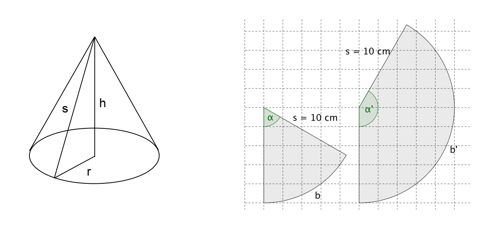

Aus Papierkreisen mit $10\text{ cm}$ Radius werden kegelförmige «Tüten» geformt.

a) Stellen Sie aus unterschiedlich grossen Sektoren Kegel her. Variieren Sie dabei den Winkel $\alpha$ des Sektors. Belassen Sie den Radius $s = 10\text{ cm}$ konstant.
Diese Aufgabe wird im Unterricht besprochen.
b) Welcher Kegel hat das grösste Volumen, welcher die grösste Mantelfläche, welcher den längsten Kreisbogen? – Beschreiben und begründen Sie Ihre Vermutungen.
Diese Aufgabe wird im Unterricht besprochen.
c) Berechnen Sie für verschiedene Zentriwinkel $\alpha$: die Länge des Kreisbogens $b$, die Mantelfläche $M$ und das Volumen $V$.
Diese Aufgabe wird im Unterricht besprochen.
d) Zeichnen Sie die dazugehörigen Graphen in je ein Koordinatensystem.
Diese Aufgabe wird im Unterricht besprochen.
e) Beschreiben Sie in Worten, wie sich die Länge des Kreisbogens $b$, Mantelfläche $M$ und das Volumen mit zunehmendem Zentriwinkel $\alpha$ verändern.
Diese Aufgabe wird im Unterricht besprochen.
f) Wählen Sie einen Kegel aus, stellen Sie ihn auf die Spitze und füllen ihn (in Gedanken) mit Wasser. Wie ändert sich die Füllhöhe mit der Zeit? Wie unterscheiden sich die Graphen bei Kegeln unterschiedlicher Zentriwinkel?